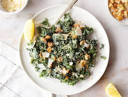
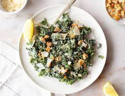

Lab 4: For Lab 4 of tech essentials the task was add jQuery to this site. Below you will find that using jQuery I have added a image carousel with a previous and next option interaction.
 



I have been cooking since I can remember. Typically I am the one in the cooking cooking for major holidays when my extended family comes over. I love combining random ingredients so what I come up with. Luckily most of the time it works out well! Other times there are delivery services used as back up!

During Covid I spent a lot of time reading. There was only so much tv I could watch, so I gravitated to books. Before covid, I would typically only find time to read on my commute in the mornings and the afternoons. But during covid, my frequency of finishing books dramatically increased.